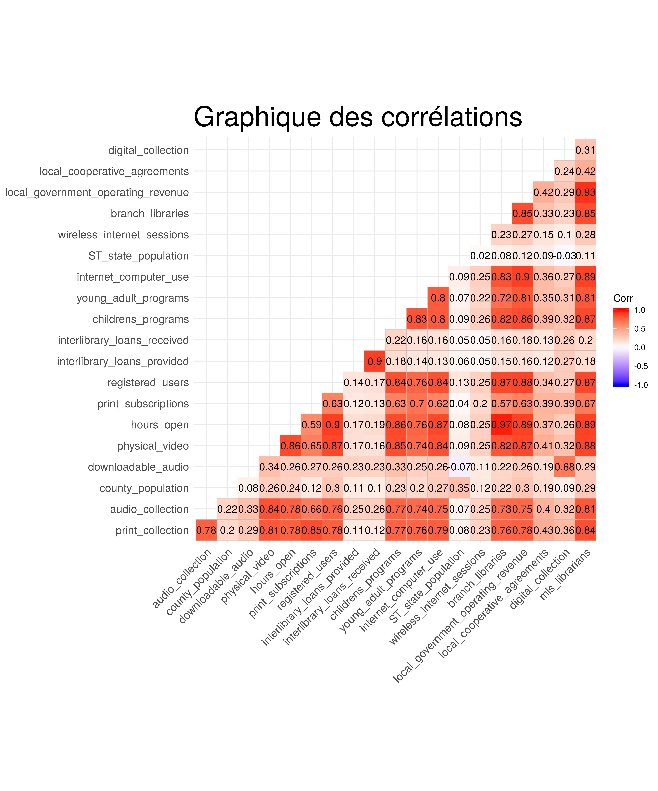

4 Analyse des corrélations
L’analyse des corrélations nous permet de déterminer le niveau de dépendance qui existe entre les variables numériques du jeu. Pour chaque paire de variable nous calculons le coefficient de corrélation qui résume leur dépendance. Les corrélations entre les variables s’afficheront dans une matrice des corrélations. Pour faciliter la lecture de la matrice des corrélations, nous pouvons la représenter graphiquement.

Le nombre d’individus étant supérieur à 30, les coefficients de corrélation que nous obtenons sur ce graphique sont significatifs.
L’analyse des corrélations entre les variables quantitatives nous montre que globalement la distribution des corrélations est assez variée. D’une part nous avons des corrélations assez élevées (plus de 0.75) et d’autres qui sont faibles. Toutefois nous observons que toutes les corrélations sont positives, autrement dit toutes les variables sont positivement liées dans une relation linéaire.
A partir d’ici nous pouvons prédire que cela pourra éventuellement avoir un impact sur les analyses factorielles que nous effectuerons.